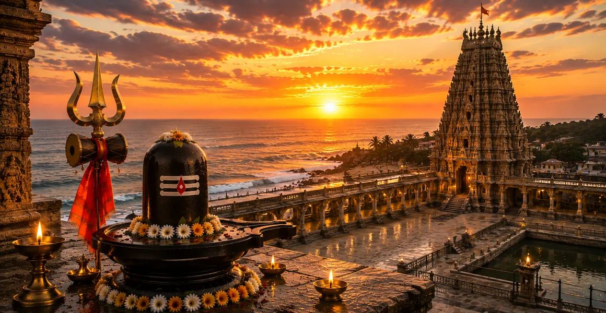

पवित्र रामेश्वर
कोटिरुद्र संहिता का बीसवां अध्याय भगवान राम द्वारा शाश्वत भक्ति और लौकिक कृपा के स्मारक के रूप में स्थापित रामेश्वर ज्योतिर्लिंग की कहानी को खूबसूरती से बताता है।
यह पता लगाता है कि कैसे भगवान ने स्वयं अपने सांसारिक अवतार में, शिव की दिव्यता का सम्मान किया और धर्म और मोक्ष के चाहने वालों के लिए आदर्श मार्ग स्थापित किया।
यह अध्याय सिखाता है कि सर्वोच्च शक्ति और सच्ची मुक्ति दिव्य और धार्मिक कार्य के प्रति समर्पण के संश्लेषण में पाई जाती है।
अध्याय 20 की मुख्य बातें
भगवान राम की भक्ति
भगवान राम ने सभी भक्तों के लिए सर्वोच्च उदाहरण स्थापित करते हुए ज्योतिर्लिंग की स्थापना की।
मोक्ष के लिए पुल
रामेश्वर नश्वर संसार को मुक्ति से जोड़ने वाले एक शक्तिशाली पुल के रूप में कार्य करता है।
कृपा का सागर
यह स्थल शिव की कृपा का एक विशाल सागर है, जो सभी सच्चे दिलों के लिए सुलभ है।
धर्म और भक्ति
राम इस बात का उदाहरण देते हैं कि कैसे ईश्वर की भक्ति धर्म के मार्ग का समर्थन करती है।
पवित्रीकरण
रामेश्वर की तीर्थयात्रा पिछले कर्मों और अशुद्धियों से आत्मा को शुद्ध करती है।
शाश्वत विरासत
ज्योतिर्लिंग भक्ति और कर्तव्य के बीच एकता के प्रतीक के रूप में खड़ा है।
इस अध्याय में मुख्य विषय
- 01भगवान राम द्वारा दिव्य स्थापना→
- 02राम और शिव का अटूट बंधन→
- 03रामेश्वर का आध्यात्मिक महत्व→
- 04भक्ति और कर्तव्य का संश्लेषण→
- 05अनुग्रह की सफाई शक्ति→
- 06मोक्ष के मार्ग के रूप में रामेश्वर→
- 07तीर्थयात्रा का पुण्य→
- 08भक्त का आंतरिक परिवर्तन→
- 09अनन्त आशीर्वाद प्राप्त हो रहा है→
- 10पवित्र तीर्थस्थल पर निष्कर्ष→
- 11अध्याय 21 की ओर →
भगवान राम द्वारा दिव्य स्थापना
अध्याय 20 उस गहन क्षण पर प्रकाश डालता है जब भगवान राम ने अपने ब्रह्मांडीय मिशन के लिए शिव का आशीर्वाद मांगते हुए तट पर ज्योतिर्लिंग स्थापित किया था।
इस अधिनियम ने रामेश्वर को दिव्य ज्ञान और शक्ति के शाश्वत स्रोत के रूप में स्थापित किया।
राम और शिव का अटूट बंधन
कथा इस बात पर जोर देती है कि राम और शिव मूलतः एक हैं, जो कर्म के मार्ग और समर्पण के मार्ग के बीच सामंजस्य को दर्शाता है।
यह स्थापना उनकी दिव्य एकता के शाश्वत प्रमाण के रूप में कार्य करती है।
रामेश्वर का आध्यात्मिक महत्व
रामेश्वर को न केवल एक स्थान के रूप में, बल्कि एक प्रवेश द्वार के रूप में प्रतिष्ठित किया जाता है, जहां आत्मा ब्रह्मांडीय परमात्मा की लय के साथ तालमेल बिठा सकती है।
यह एक ऐसा स्थान है जहां हर प्रार्थना भगवान के हृदय में गूंजती है।
भक्ति और कर्तव्य का संश्लेषण
राम का उदाहरण दिखाता है कि सच्ची भक्ति किसी को कर्तव्य से दूर नहीं ले जाती, बल्कि उसे दैवीय उत्कृष्टता के साथ कर्तव्य पूरा करने की शक्ति देती है।
रामेश्वर में पूजा आध्यात्मिक अभ्यास और धार्मिक कार्यों के संतुलित जीवन को प्रोत्साहित करती है।
अनुग्रह की सफाई शक्ति
पाठ बताता है कि रामेश्वर से निकलने वाली कृपा मानव हृदय की गहराई में बैठी अशुद्धियों के लिए एक शक्तिशाली विलायक है।
ईमानदार तीर्थयात्री अपने अतीत के बोझ को हल्का और अपनी आत्माओं को उन्नत पाते हैं।
मोक्ष के मार्ग के रूप में रामेश्वर
रामेश्वर मुक्ति के लिए एक सक्रिय पुल के रूप में कार्य करते हैं, जो भक्त को जीवन की जटिलताओं के माध्यम से शिव के साथ मिलन की सरलता की ओर मार्गदर्शन करते हैं।
यह परम मुक्ति का अभयारण्य है।
तीर्थयात्रा का पुण्य
शास्त्र इस बात पर प्रकाश डालता है कि सच्ची आस्था के साथ इस स्थल पर जाने से अनगिनत अच्छे कर्मों का फल मिलता है।
यह आध्यात्मिक परिपक्वता को तेज करता है और परमात्मा के साथ गहरे संबंध को बढ़ावा देता है।
भक्त का आंतरिक परिवर्तन
रामेश्वर का अनुभव मूल रूप से भक्त के दृष्टिकोण को बदल देता है, जिससे ध्यान भौतिक चिंताओं से हटकर आध्यात्मिक आकांक्षाओं पर केंद्रित हो जाता है।
व्यक्ति को अस्तित्व के हर पहलू में शिव का हाथ दिखाई देने लगता है।
अनन्त आशीर्वाद प्राप्त हो रहा है
यहां पाई जाने वाली कृपा स्थायी है, न केवल वर्तमान जीवन को आशीर्वाद देती है बल्कि आत्मा की यात्रा में प्रगति भी सुनिश्चित करती है।
यह दिव्य प्रेम का एक उपहार है जो समय और स्थान से परे है।
पवित्र तीर्थस्थल पर निष्कर्ष
अध्याय का समापन भक्ति की शाश्वत आधारशिला के रूप में रामेश्वर का सम्मान करते हुए, प्रत्येक साधक को भगवान की कृपा का अनुभव करने के लिए आमंत्रित करते हुए होता है।
उनकी उपस्थिति उतनी ही ज्वलंत और शक्तिशाली बनी हुई है जितनी उस दिन स्थापित हुई थी।
अध्याय 21 की ओर
रामेश्वर की पवित्र महिमा का पता लगाने के बाद, कथा अगले ज्योतिर्लिंग की ओर बढ़ने की तैयारी करती है।
पाठकों को अध्याय 21 में भीम और भीमाशंकर की सम्मोहक कहानी का पता लगाने के लिए आमंत्रित किया जाता है।
अध्याय 20 की मुख्य शिक्षाएँ
शक्ति के रूप में भक्ति
सच्ची भक्ति धार्मिक कर्तव्यों को पूरा करने के लिए आध्यात्मिक शक्ति प्रदान करती है।
पथों का सामंजस्य
राम का उदाहरण दिखाता है कि कर्म और भक्ति एक ही सिक्के के दो पहलू हैं।
सफाई अनुग्रह
दिव्य उपस्थिति कर्म को विघटित कर देती है और साधक के हृदय को शुद्ध कर देती है।
मुक्ति का पुल
ईमानदार आत्माओं के लिए रामेश्वर मोक्ष का एक सक्रिय प्रवेश द्वार है।
जीवित धर्म
सांसारिक उत्तरदायित्वों की पूर्ति के साथ आध्यात्मिक अभ्यास को एकीकृत करें।
शाश्वत संबंध
ईश्वर के साथ गहरा संबंध समय की सभी सीमाओं से परे है।
आध्यात्मिक चिंतन
रामेश्वर की पवित्र कहानी हमें याद दिलाती है कि जो लोग देवत्व के मार्ग पर चलते हैं, उनके लिए भी सर्वोच्च भगवान को स्वीकार करना आवश्यक है। भगवान राम द्वारा ज्योतिर्लिंग स्थापित करने का कार्य किसी आवश्यकता का संकेत नहीं है, बल्कि हमारे लिए उनके नक्शेकदम पर चलने का निमंत्रण है। यह हमें सिखाता है कि हमारे कर्तव्य और हमारी भक्ति एक साथ मिलकर निभायी जानी चाहिए। शिव की कृपा प्राप्त करके, हम इस दुनिया के माध्यम से अपनी यात्रा को आगे बढ़ाने और अंततः सभी अस्तित्व के स्रोत पर लौटने के लिए आवश्यक आंतरिक स्पष्टता और शक्ति पाते हैं।
अध्याय 20 का संदेश जीना
अपने कर्मों को ईश्वर को समर्पित करें, हर कर्तव्य को परम भगवान को अर्पण के रूप में निभाएं, जैसे भगवान राम ने किया था।
भक्ति और कर्म की एकता पर चिंतन करके आध्यात्मिक स्पष्टता प्राप्त करें, यह सुनिश्चित करें कि आपका जीवन ज्ञान और प्रेम दोनों द्वारा निर्देशित हो।
याद रखें कि मुक्ति उस हृदय में मिलती है जो धर्म के प्रति समर्पित और सक्रिय दोनों है।
प्रमुख आध्यात्मिक अवधारणाएँ
राम द्वारा स्थापित ज्योतिर्लिंग, एकता और भक्ति का प्रतीक।
शिव के प्रति पूर्ण समर्पण के साथ कर्तव्य पालन का आदर्श उदाहरण।
सक्रिय कर्तव्य को आंतरिक भक्ति के मार्ग के साथ एकीकृत करना।
सच्चे साधक पर ईश्वर का शुद्धिकरण प्रभाव।
मुक्ति का अंतिम लक्ष्य दिव्य संरेखण के माध्यम से प्राप्त किया गया।
भगवान को अर्पण के रूप में किया गया धार्मिक कार्य।
अध्याय सारांश
कोटिरुद्र संहिता अध्याय 20 भगवान राम द्वारा स्थापित रामेश्वर ज्योतिर्लिंग की पवित्र उत्पत्ति का पता लगाता है। यह स्थल भक्ति और कर्तव्य के बीच एक शाश्वत पुल के रूप में खड़ा है, जो साधकों को धार्मिक कार्य और शिव के प्रति समर्पण के माध्यम से मुक्ति का मार्ग प्रदान करता है। अध्याय राम और शिव की एकता और अनुग्रह की परिवर्तनकारी शक्ति पर जोर देता है, जो पाठकों को अध्याय 21 में भीमशंकर की कहानी की ओर मार्गदर्शन करता है।
अक्सर पूछे जाने वाले प्रश्न
1. कोटिरुद्र संहिता अध्याय 20 का मुख्य विषय क्या है?
अध्याय 20 में भगवान राम द्वारा रामेश्वर ज्योतिर्लिंग की दिव्य स्थापना का विवरण दिया गया है, जिसमें भक्ति की शक्ति, धर्म के महत्व और आध्यात्मिक मुक्ति के मार्ग पर जोर दिया गया है।
2. शिव पुराण में रामेश्वर का महत्व क्यों है?
रामेश्वर शिव की भक्ति और धर्म के पालन के सही संश्लेषण का प्रतिनिधित्व करता है, जिसकी स्थापना स्वयं भगवान राम ने कृपा और क्षमा पाने के लिए की थी।
3. रामेश्वर की कहानी में भगवान राम की क्या भूमिका है?
भगवान राम एक ऐसे भक्त के सर्वोत्तम उदाहरण हैं, जिन्होंने दिव्य होने के बावजूद, ज्योतिर्लिंग को हमेशा के लिए कृपा के स्रोत के रूप में स्थापित करने के लिए कठोर पूजा की।
4. रामेश्वर में पूजा करने के आध्यात्मिक लाभ क्या हैं?
रामेश्वर में पूजा करने से आत्मा पिछले अपराधों से शुद्ध हो जाती है, उद्देश्य की स्पष्टता मिलती है, और भक्त की परम मुक्ति (मोक्ष) की ओर प्रगति तेज हो जाती है।
5. अध्याय 20 आसपास के अध्यायों से कैसे जुड़ता है?
अध्याय 20 अध्याय 19 (नागेश्वर की महिमा) के बाद आता है और अध्याय 21 (भीम और भीमशंकर की कहानी) से पहले आता है।
6. यह अध्याय भक्तों को क्या मूल संदेश देता है?
मूल संदेश यह है कि सच्ची भक्ति, धर्म के पालन के साथ मिलकर, दैवीय कृपा और स्थायी आध्यात्मिक स्वतंत्रता के द्वार खोलती है।
"रामेश्वर की कृपा से, भक्ति और कर्तव्य एक हो जाते हैं, जो साधक को सांसारिक अस्तित्व के तट से शाश्वत मुक्ति के असीम सागर तक ले जाते हैं।"
कोटिरुद्र संहिता के माध्यम से जारी रखें
अध्याय 20 पवित्र रामेश्वर की खोज करता है। अध्याय 21, भीम और भीमाशंकर की कहानी जारी रखें।